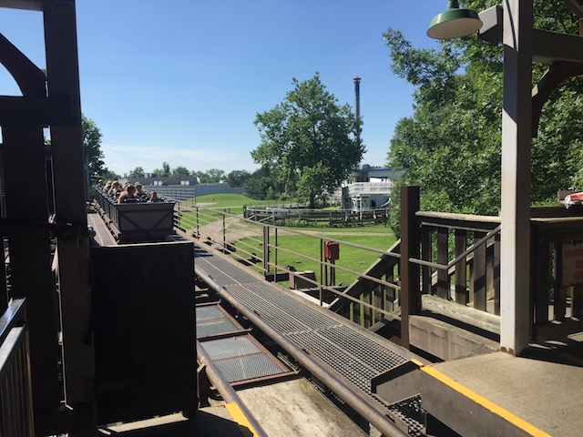
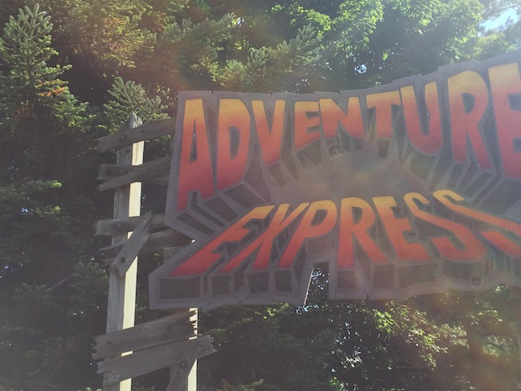

| |
Adventure Express Review

We're here at Kings Island. Today's ride we'll be reviewing for you is Adventure Express. Kings Island's mine train. After getting in the cars, you dip out of the station and turn around under the bridge. After that, you then go through another turnarond. At this point, you can't see anything. It's like you're in the middle of nowhere. Then you dip down a small drop and make a sharp turn into a random tunnel. The tunnel is fun. Then after some straight track, you then pop out of the tunnel and then head into a big turn to the right. This leads to more straight track which leads to yet another tunnel. This gives us plenty of time to just shout "TAKE THE TUNNEL!!!" before actually taking the tunnel. While inside the tunnel, we turn to the right, and actually notice that this tunnel looks an awful lot like the inside of the temple from Indiana Jones. In fact, you actually see Indiana Jones right at the end of the tunnel. Or at least some imitation Indiana Jones. But before we can question whether that really was Indiana Jones, we then begin to climb a lifthill. After that, you then start to go into a downward helix drop that provides us with just enough speed to not be crawling. We then turn and rise up a little. Oh, and our isolation is now broken thanks to the presence of Banshee, Drop Zone, and the Skycoaster. We then head into another turnaround before going into another helix. While not intense or anything, this helix does have some cool head choppers that actually kind of work. Then everything goes black as we decide to once again, "TAKE THE TUNNEL!!!" The tunnel mostly consists of some straight track, but it does have a turn out of it, which we then roll out of and into a big turnaround. This just leads to an upward turn that just leads us into yet, ANOTHER TUNNEL!!! Good God. What the hell was Arrow thinking about when they were constructing this ride? ;) You then go into a lifthill, and things actually get pretty dramatic at this point. Some really cool music is playing, and there is some aztec theming going on, something big must happen afterwards with all this adrenaline they're giving us. Then this voice just starts saying "The end is near! The end is near!" Ok, something big is going to happen! =) After cresting that lifthill, you dip down and that leads us into a turn that leads directly to THE FINAL F*CKING BRAKES!!! Seriously, what the hell is up with that lifthill!!? That has got to be the biggest letdown on any ride anywhere. Ok, fine. Its the 2nd biggest letdown on any ride anywhere. I know people complain about Ninja being a let down due to it's lifthill to the station, but at least Ninja doesn't play music and actually pump us up for stuff! But aside from that, Adventure Express is just an OK mine train. It is nowhere near the best mine train. But to be fair, there are much worse mine trains out there. I would only recommend riding it if the line is less than 10 minutes long.
5/10
Location: Kings Island
Opened: 1991
Built by: Arrow
Last Ridden: June 28, 2018
Adventure Express Photos


Home
|